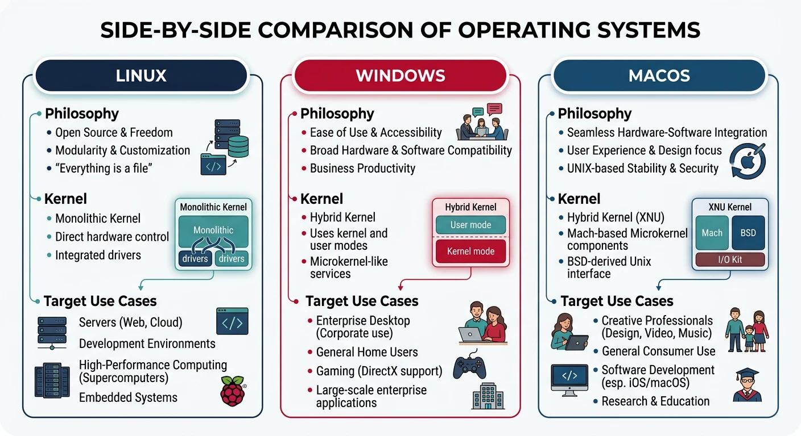
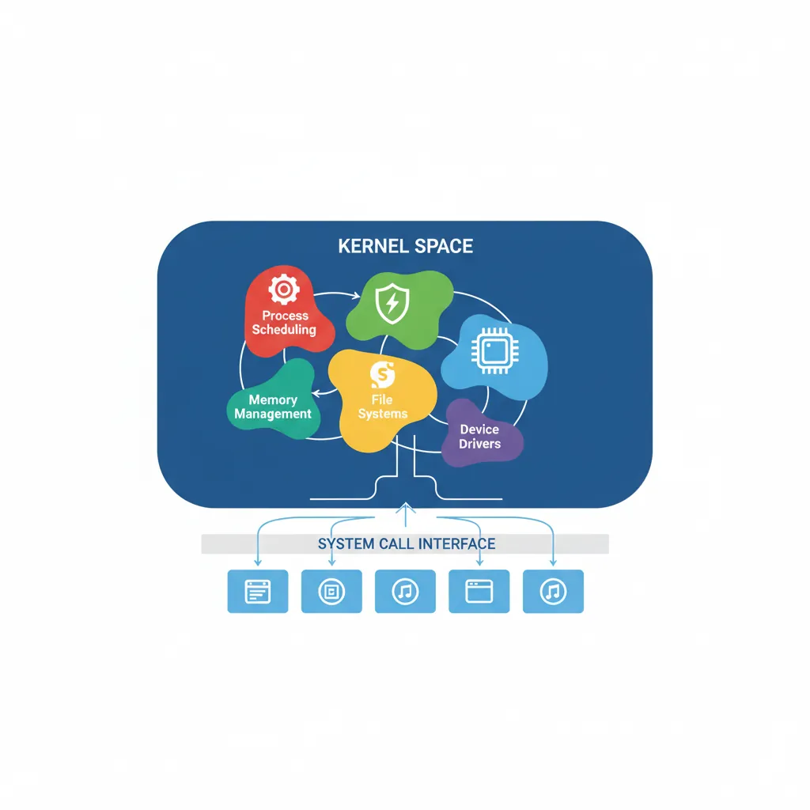
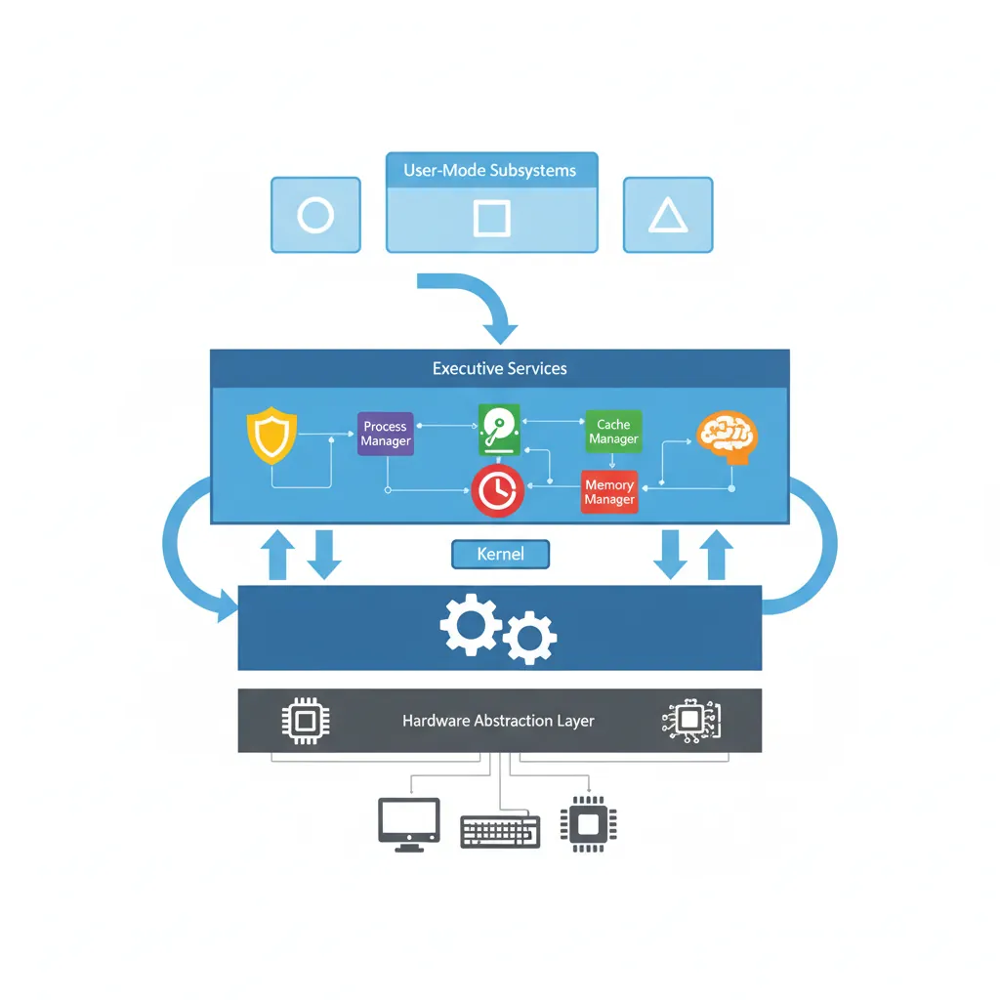
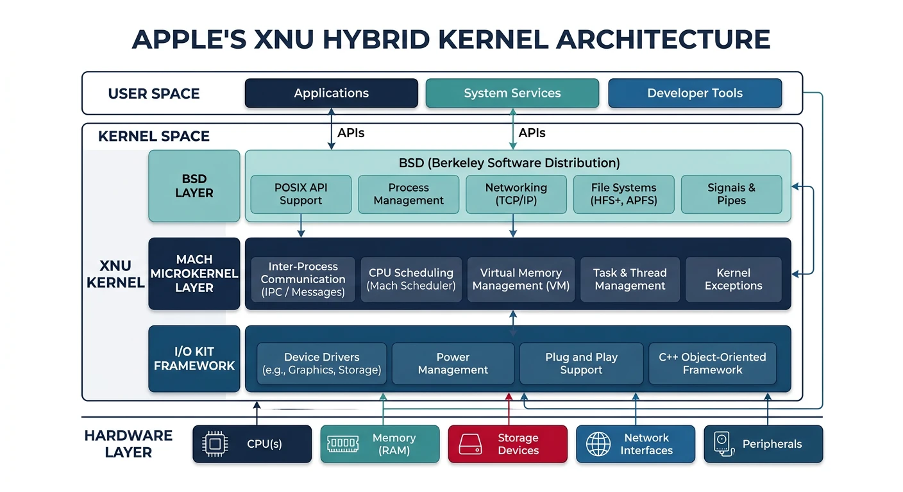
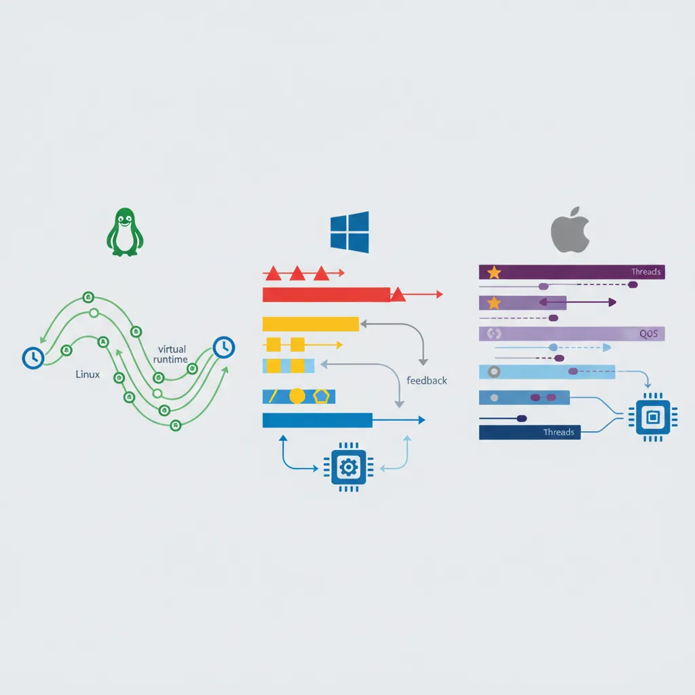

Each major operating system represents different design philosophies and trade-offs. Comparing them reveals the diversity of approaches to common OS challenges.

Three major operating systems compared: Linux (flexibility), Windows (compatibility), and macOS (integration) reflect distinct design philosophies
Series Context: This is Part 23 of 24 in the Computer Architecture & Operating Systems Mastery series. We compare the three major desktop/server operating systems.
Design Philosophy Matters: Linux prioritizes flexibility and transparency. Windows emphasizes compatibility. macOS focuses on integration. These philosophies shape every technical decision.
Linux Overview
Linux is a free, open-source kernel powering everything from phones (Android) to supercomputers.

Linux monolithic kernel architecture: all core services run in kernel space with a unified system call interface
Linux History & Philosophy
Linux Timeline:
══════════════════════════════════════════════════════════════
1991 Linus Torvalds releases Linux 0.01
1994 Linux 1.0 (TCP/IP, X Window)
1996 Linux 2.0 (SMP support)
2003 Linux 2.6 (O(1) scheduler)
2011 Linux 3.0 (cgroups mature)
2020 Linux 5.x (io_uring, eBPF)
Design Philosophy:
• "Everything is a file"
• Small tools that do one thing well
• Open development, GPLv2 license
• Performance and flexibility over ease of use
Windows Overview
Windows NT is Microsoft's kernel since Windows NT 3.1 (1993), designed for compatibility and enterprise features.

Windows NT hybrid kernel architecture: executive services bridge user-mode subsystems and the hardware abstraction layer
Windows NT Architecture:
══════════════════════════════════════════════════════════════
User Mode
┌───────────────────────────────────────┐
│ Win32 Apps | UWP Apps | Subsystems │
├───────────────────────────────────────┤
│ NTDLL.DLL (NT API) │
└───────────────────────────────────────┘
│
Kernel Mode ▼
┌───────────────────────────────────────┐
│ Executive (NT Kernel Services) │
│ • Process Mgr • Memory Mgr │
│ • I/O Mgr • Object Mgr │
├───────────────────────────────────────┤
│ HAL (Hardware Abstraction Layer) │
└───────────────────────────────────────┘
Key Features:
• Object-based design (everything is an object)
• Strong backward compatibility
• Registry for configuration
• Hybrid kernel (microkernel-like structure, monolithic performance)
macOS Overview
XNU ("X is Not Unix") is Apple's hybrid kernel combining Mach microkernel with BSD Unix.

Apple's XNU hybrid kernel: Mach microkernel provides IPC and memory management while the BSD layer handles POSIX APIs and networking
Kernel Architecture Comparison:
══════════════════════════════════════════════════════════════
Aspect Linux Windows NT macOS (XNU)
━━━━━━━━━━━━━━━━━━━━━━━━━━━━━━━━━━━━━━━━━━━━━━━━━━━━━━━━━━━━
Type Monolithic Hybrid Hybrid
Source Open (GPL) Closed Partial open
LOC ~30M ~50M (est.) ~8M
Syscall syscall inst sysenter/int2e mach_msg/BSD
IPC Pipes, sockets Named pipes, Mach ports
signals, SysV LPC/ALPC BSD sockets
Scheduling Comparison

CPU scheduling compared: Linux uses CFS with virtual runtime fairness, Windows uses priority-based multilevel feedback, and macOS uses QoS-driven thread scheduling
CPU Scheduling Approaches:
══════════════════════════════════════════════════════════════
LINUX (CFS - Completely Fair Scheduler):
• Red-black tree of tasks, sorted by virtual runtime
• Tasks that run less get scheduled more
• Per-CPU runqueues, periodic load balancing
• Priority: nice values (-20 to +19)
WINDOWS (Multilevel Feedback Queue):
• 32 priority levels (0-31)
• Higher priority always preempts lower
• Priority boost for I/O-bound tasks
• Foreground window priority boost
macOS (Mach-based):
• Thread-centric scheduling (not process)
• Quality of Service (QoS) classes
• Grand Central Dispatch integrates with scheduler
• Priority: kernel manages based on QoS
Memory Management
Virtual Memory Implementation:
══════════════════════════════════════════════════════════════
LINUX:
• 4-level page tables (x86-64)
• Demand paging with copy-on-write
• Slab allocator for kernel objects
• OOM killer when memory exhausted
WINDOWS:
• Paged and non-paged pools
• Working Set management (per-process)
• Standby list for quick reclaim
• SuperFetch (predictive loading)
macOS:
• Compressed memory (in-RAM compression)
• Memory pressure notifications to apps
• Unified memory on Apple Silicon (CPU+GPU share)
macOS: Integration, user experience, creative workflows
Key Insight: There's no "best" OS—only the right tool for the job. Understanding how each works helps you leverage their strengths and work around limitations.